Debugging PHP Source Code in the NetBeans IDE
Contents
To follow this tutorial, you need the following software and resources.
Getting Ready
To successfully debug PHP applications in the NetBeans IDE for PHP,
you need to have the PHP engine, the Apache local web server, and the
XDebug debugger installed and configured for PHP development. If you have difficulties getting XDebug to work, see the NetBeans wiki on XDebug and/or ask the community at users@php.netbeans.org.
How PHP Debugging with XDebug Works
When XDebug is enabled in the php.ini file, XDebug can
pause and resume the PHP program execution at any time. When the
program execution is paused, XDebug can retrieve information about the
current program state, like reading the values of the program
variables. Practically, this means the following workflow:
- The user sets a breakpoint at the line where the PHP source code execution should be paused.
- When
this line is reached, the user executes the script one line after
another by pressing F7 and F8 buttons and checks the values of the
variables.
NetBeans IDE provides a debugging toolbar that helps you step
through your files. The debugging toolbar is shared with the JavaScript
debugger. See Working with the Toolbar and Editor in the JavaScript Debugger Users' Guide for a more complete description.
The Debugger Windows
When you start a debugging session, a set of Debugger windows opens
below the main editor window. To add a new window, choose Window >
Debugging. The following windows are available:
- Local Variables shows a list of initialized variables, their types, and values.
- Watches shows a list of user defined expressions with their values.
- Calls Stack shows a list of called functions in reverse order. The function called last is on the top of the list.
- Breakpoints shows a list of files and numbers of the lines where breakpoints are set.
- Sessions shows a list of currently active debugging sessions.
- Threads
- Sources
- HTTP Client-Side Monitor
These debugger windows are a shared feature with NetBeans IDE JavaScript and Java debuggers. See Examining the Debugger Windows in the JavaScript Debugger Users' Guide for a more complete description.
Debugging Session
The following procedure is the workflow of a typical debugging session.
To run a debugging session:
- Start the ide, run the project, and open the file that contains the source code which you want to debug.
- Place the cursor at the line till which you want the PHP script to be executed automatically.
- To set a breakpoint, press Ctrl-F8 or choose Debug > Toggle Line Breakpoint.
- In
the Projects window, navigate to the current project node, click the
right mouse button, and choose Debug from the popup menu. The IDE opens
the Debugger windows and runs the project in the debugger until the
breakpoint is reached.
Note: If the current project is set as Main, you can choose Debug > Debug Main Project, or press Ctrl-F5, or click 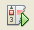.
- Switch
to the Local Variables window. The window shows all the variables
that have been initialized within the current function, their types,
and values.
- To view the value of a variable outside the
function, bring the cursor on an occurrence of the variable. The
tooltip shows the variable value.
- To execute the program
line by line including the lines within all the called functions, press
F7 or choose Debug > Step Into and watch the changes to the
variables' values in the Local Variables window.
- To check the logic of the program by watching the changes of expressions, define a new watch:
- To open the Watches window, choose Window > Debugging > Watches or press Ctrl-Shift-2. The Watches window opens.
- Anywhere
inside the Watches window, click the right mouse button and choose New
Watch from the popup menu. The New Watch window opens.
- Enter the watch expression and click OK.
Now you can make an additional check during debugging.
- To
cancel the line by line execution of the code within a function and
spring to the next line after the function call, press Ctrl-F7 or
choose Debug > Step Out.
- To skip the line by line
execution of the code in a function, get the value returned by the
function, and spring to the next line after the function call, press F8
or choose Debug > Step Over.
- To pause the debugging session, choose Debug > Pause.
- To continue the debugging session, choose Debug > Continue or press .
- To cancel the debugging session, press 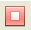.
-
When the program reaches the end, the debugger windows close.
Sample Debugging Session
The section illustrates a standard debugging session.
- Create a new PHP project with the following parameters:
- Project type - PHP application
- Sources location - the default htdocs folder location
- Run configuration - Local Web Site
Find more details about setting up a PHP project in the document Setting Up a PHP Project.
- After the project creation is completed, position the cursor
on the Source Files node, choose Properties from the popup menu, and
open the Debug window. Select the Debug Server Side PHP checkbox.
- To enable the use of hotkeys during the session, position the
cursor on the project node and choose Set as Main Project from the
popup menu.
- In the index.php file, enter the following code:
<!DOCTYPE HTML PUBLIC "-//W3C//DTD HTML 4.01 Transitional//EN">
<html>
<head>
<meta http-equiv="Content-Type" content="text/html; charset=UTF-8">
<title>NetBeans PHP debugging sample</title>
</head>
<body>
<?php
$m=5;
$n=10;
$sum_of_factorials = calculate_sum_of_factorials ($m, $n);
echo "The sum of factorials of the entered integers is " . $sum_of_factorials;
function calculate_sum_of_factorials ($argument1, $argument2) {
$factorial1 = calculate_factorial ($argument1);
$factorial2 = calculate_factorial ($argument2);
$result = calculate_sum ($factorial1, $factorial2);
return $result;
}
function calculate_factorial ($argument) {
$factorial_result = 1;
for ($i=1; $i<=$argument; $i++) {
$factorial_result = $factorial_result*$i;
}
return $factorial_result;
}
function calculate_sum ($argument1, $argument2) {
return $argument1 + $argument2;
}
?>
</body>
</html>
The code contains three functions:
- The calculate_factorial () function
- The calcualte_sum () function
- The calculate_sum_of_factorials () function that calls the calculate_factorial function twice, then calls the calcualte_sum () function once, and returns the calculated sum of factorials.
- Set a breakpoint (Ctrl-F8) at the beginning of the PHP block:
<?php
- To start debugging, click . The debugger stops at the breakpoint.
- Press F7 three times. The debugger stops at the line where the function calculate_sum_of_factorials () is called. The Local Variables window shows the variables $m and $n with their values:
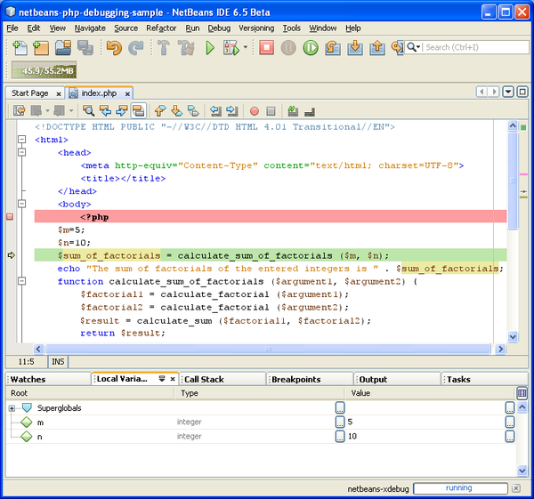
- To step into the function calculate_sum_of_factorials(), press F7. The debugger starts to execute the code within the function calculate_sum_of_factorials () and stops at the call of the function calculate_factorial().
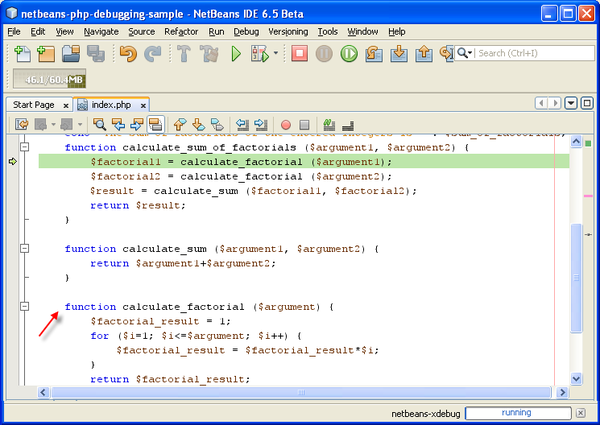
The Local Variables window now shows the local variables $argument1 and $argument2 that are declared within the function calculate_sum_of_factorials ().
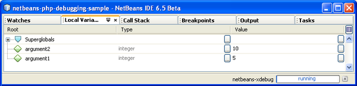
- Press F7. The debugger starts to execute the code with the function calculate_factorial().
The Call Stack window shows the stack of calls to the functions in the
reverse order with the last called function at the top of the list:
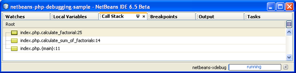
- Press F7 to step into the loop. View the values of the variables in the Local Variables window.
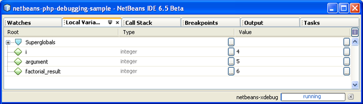
- When
you make sure that the code works correctly, press Ctrl-F7 to cancel
the function execution. The program returns to the line next after the
call of the function calculate_factorial().
Note: Alternatively, you can press F7 until the program completes execution of the function calculate_factorial(). You will also return to the line next after its call.
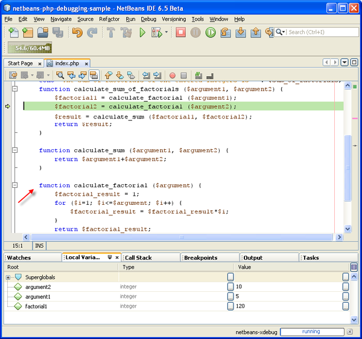
- Because you have just checked the function calculate_factorial()
and know that it works correctly, you can skip its execution ("step
over"). To step over, press F8. The program stops at the call of the
function calculate_sum().
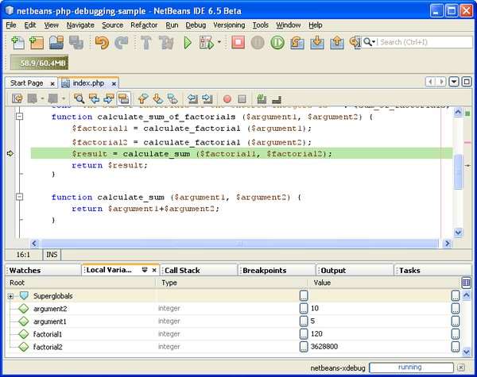
- To step into the function calculate_sum(), press F7.
- To step over, press F8. In either case the debugger stops at the last line in the function calculate_sum_of_factorials().
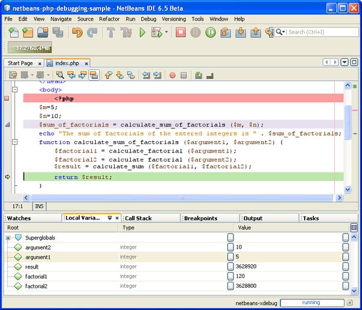
- Press F7. The debugger moves to the line with the echo statement.
- Press F7 till the debugger exits the program. The browser window opens and shows the result of program execution:
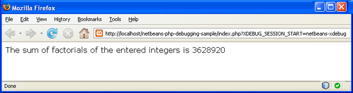
Using Additional Watches
You can define an additional watch expression to follow up your program execution. This may help you catch an error.
- Update the code as follows (replace a plus with a minus):
function calculate_sum ($argument1, $argument2) {
return $argument1 - argument2;
}
Suppose that this resulted from misspelling but actually you need to calculate sum.
- Choose Debug > New Watch or press Ctrl-shift-F7. The New Watch window opens.
- Enter the following expression and click OK.
$factorial1+$factorial2
The new expression appears in the Watches window.
- Run the debugging session. When the debugger stops at the line
return $result;
compare the value of the expression in the Watches window and the value
of $result in the Local Variables window. They should be the same but
they differ.
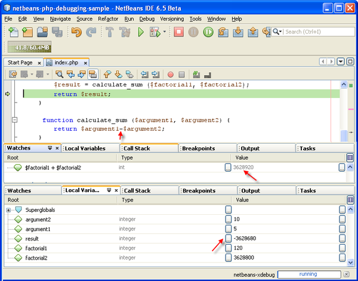
This example is very simple and is supposed to give some general notion of using watches.
Mixed PHP and HTML Cases
You can debug code that contains both PHP and HTML blocks. In the example from the Sample Debugging Session section the values are hardcoded. Expand the code with an HTML input form for entering values.
- Add the following HTML code above the <?php ?> block:
<form action="index.php" method="POST">
Enter the first integer, please:
<input type="text" name="first_integer"/><br/>
Enter the second integer, please:
<input type="text" name="second_integer"/><br/>
<input type="submit" name="enter" value="Enter"/>
</form>
Find more information about HTML input forms.
- Replace the following lines at the top of the <?php ?> block:
$m=5;
$n=10;
$sum_of_factorials = calculate_sum_of_factorials ($m, $n);
echo "The sum of factorials of the entered integers is " . $sum_of_factorials;
with the following code:
if (array_key_exists ("first_integer", $_POST) && array_key_exists ("second_integer", $_POST)) {
$result = calculate_sum_of_factorials ($_POST["first_integer"], $_POST["second_integer"]);
echo "Sum of factorials is " . $result;
}
- Set a breakpoint at the beginning of the <?php ?> block and start the debugging session.
- Press F7. The debugger steps into the program. The browser window
opens but the input form is not displayed. This is correct behavior of
the debugger because it has to pass through the entire source code of a
web page before the page can be displayed. Practically, this means that
the debugger passes through the code twice. First time the debugger
processes the code to display the HTML input form. The second time the
debugger executes PHP code step by step.
- Press F7 till the debugger reaches the end of the program and the input form opens.
- Fill in the form and click Enter. The debugging session continues as described in section Sample Debugging Session.
To send comments and suggestions, get support, and keep informed on the latest
developments on the NetBeans IDE PHP development features, join
the users@php.netbeans.org mailing list.
See Also
For more information about debugging applications in NetBeans IDE,
see the following resources:
Back to the PHP Learning Trail